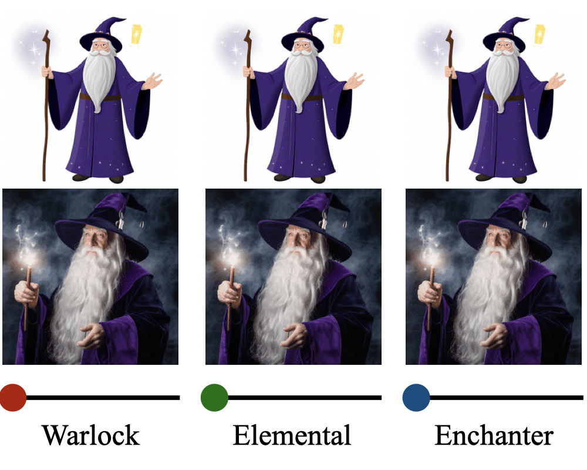
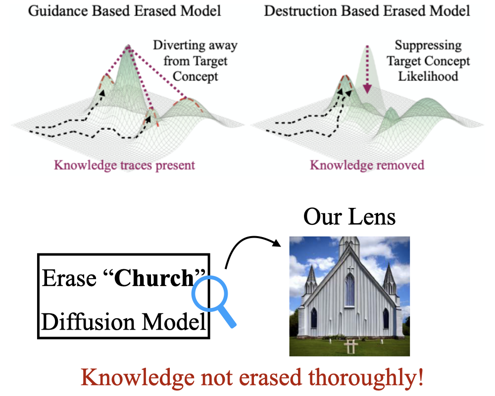

|
Rohit Gandikota I'm a PhD student at Northeastern University advised by Prof. David Bau. I'm interested in enumerating and understanding knowledge inside generative image and language models. I also closely work with Prof. Antonio Torralba from MIT. I interned at Adobe Research. I previously worked at Indian Space Research Organization as an Applied Scientist, where I worked on advancing image sensing capabilites towards better disaster management and monitoring systems using neural networks. |

|
ResearchI'm interested in understanding and enumerating knowledge inside generative models like text-to-image diffusion and language models. Most of my research is about editing and discovering concepts through model editing and interventions. |
|
|
Distilling Diversity and Control in Diffusion Models
Rohit Gandikota, David Bau arXiv, 2025 project page / arXiv / code Distillated diffusion models are super fast, but lack sample diversity. In our work, we study why this occurs. We found that distilled models have the same concepts required for diversity of base, but don't use them. Through theoretical analysis and casual experiments we narrow down this to - the first timestep of diffusion generation! |
|

|
SliderSpace: Decomposing the Visual Capabilities of Diffusion Models
Rohit Gandikota, Zongze Wu, Richard Zhang, David Bau, Eli Shechtman, Nick Kolkin ICCV, 2025 project page / arXiv / code / demo SliderSpace automatically decomposes diffusion models' visual capabilities into controllable, human-understandable directions from a single text prompt. This framework enables users to explore and discover novel concepts encoded inside any diffusion model |
|
|
Erasing Conceptual Knowledge from Language Models
Rohit Gandikota, Sheridan Feucht, Sameul Marks, David Bau NeurIPS, 2025 project page / arXiv / code / models We show that language models can be used as classifiers and propose an unlearning methods where a language model self-critics its knowledge and guides itself to unlearn. This method is essential to retain the fluent text generation capabilities after unlearning. |
|
|
Concept Sliders: LoRA Adaptors for Precise Control in Diffusion Models
Rohit Gandikota, Joanna Materzyńska, Tingrui Zhou, Antonio Torralba, David Bau ECCV, 2024 project page / arXiv / code / demo This work introduces LoRA adaptors that provide precise control over specific attributes in diffusion model outputs, such as weather, age, or artistic styles. The sliders are trained using a small set of prompts or images to identify low-rank parameter directions, minimizing interference with other attributes. They can be composed and continuously controlled |
|
|
Unified Concept Editing in Diffusion Models
Rohit Gandikota, Hadas Orgad, Yonatan Belinkov, Joanna Materzyńska, David Bau WACV, 2024 project page / arXiv / code UCE employs a fast closed-form solution for editing text-to-image diffusion models to address bias, copyright, and offensive content simultaneously without retraining. The method enables scalable and concurrent edits by modifying cross attention weights. |
|
|
Erasing Concepts from Diffusion Models
Rohit Gandikota*, Joanna Materzyńska*, Antonio Torralba, David Bau ICCV, 2023 project page / arXiv / code / demo This work presents a method for removing specific visual concepts from text-to-image diffusion models while preserving their overall generative capabilities. |
AdvicingI've had the oppurtunity to advice some amazing students and folks! |
|

|
When Are Concepts Erased From Diffusion Models?
Kevin Lu, Nicky Kriplani, Rohit Gandikota, Minh Pham, David Bau, C. Hegde, Niv Cohen NeurIPS, 2025 project page / arXiv / code Traditionally erasure is evaluated externally by analyzing generated images. We release a nuanced and rigorous suite of evaluation techniques including incontext, training-free, and dynamic tracing probes to investigate if concepts are "really" erased. Answer: Not really! |
|
|
Opt-In Art: Learning Art Styles Only from Few Examples
Hui Ren*, Joanna Materzyńska*, Rohit Gandikota, David Bau, Antonio Torralba NeurIPS, 2025 project page / arXiv / code / demo This work presents a new paradigm - "do diffusion models need millions of artworks in training data to actually learn art?". We release a new diffusion model trained completely on art-free data. This model can still mimic art by seeing less than 5 art images. |
|
|
RippleBench: Capturing Ripple Effects by Leveraging Existing Knowledge Repositories
Roy Rinberg, Usha Bhalla, Igor Shilov, Rohit Gandikota MechInterp (Spotlight), NeurIPS, 2025 project page / paper / code Knowledge editing in LLMs have unintended ripple effects on nearby concepts. Measuring this requires building a custom dataset - challenging!. We propose RippleBench - our RAG-LLM pipeline can automatically generate structured datasets given a concept ("biology"). |
Miscellanea |
Media |
CBS: Our work on generative text-to-image unlearning (ESD and UCE) is covered by reporter Christina Hager
|
Awards |
Best Research Thesis Award (Bachelor's), INAE
Full-ride scholarship for Bachelor's, Department of Space, India |
|
Website template adopted from Jon Barron's website! |